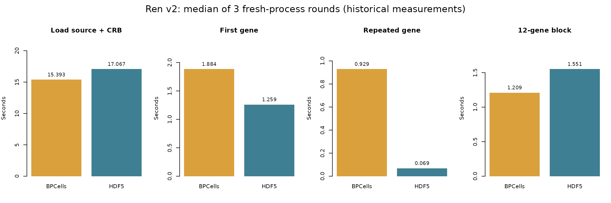

Large-dataset benchmarks: expression, storage and Viewer
Xuesong Wang
Source:vignettes/expression_backend_benchmark.Rmd
expression_backend_benchmark.RmdScope and evidence
This article separates expression access, CRB persistence, server preparation, and browser rendering. Their timings have different boundaries and cannot be added into an overall Viewer speedup. For backend selection, sidecar portability and launching the demo, see Working with large datasets.
The recorded measurements below are historical experiments, not a new 5.0.0 benchmark. Correctness repairs and the current release have not been remeasured under a complete matched large-data protocol. A passed regression suite does not establish a performance result.
All tables and the Ren figure read the small, checked-in records
under inst/extdata/benchmarks/. These records are included
in installed packages; rendering this article requires neither a large
dataset nor a developer cache. Do not overwrite recorded experiments
with a new run.
Ren v2: expression backends
The recorded 2026-10-08 comparison used matching BPCells and HDF5 CRBs with 1,462,702 cells and 27,943 genes. Each backend ran in three fresh R processes, with alternating backend order. A separate planning process froze a 12-gene panel and reference value fingerprints. Every measurement verified identical single-row and block values outside the timed expressions.
startup_seconds includes source-package loading and CRB
loading. First-gene latency is the first getter call in that process;
repeated-gene latency is a within-process median. The 12-gene block is
materialized. A fresh process does not imply a cold operating-system
disk cache. These are R-side measurements, not time until a browser page
becomes usable. The retained TSV does not contain a complete
host/package manifest, limiting portability and exact environment
reproduction; future reruns must retain it alongside their
observations.
ren <- read_tsv("ren-backends-20261008.tsv")
stopifnot(all(ren$correctness == "OK"))
metrics <- c("startup_seconds", "first_gene_seconds", "hot_gene_p50_seconds", "twelve_gene_seconds")
ren_summary <- aggregate(ren[metrics], list(backend = ren$backend), stats::median)
knitr::kable(ren_summary, digits = 3)| backend | startup_seconds | first_gene_seconds | hot_gene_p50_seconds | twelve_gene_seconds |
|---|---|---|---|---|
| bpcells | 15.393 | 1.884 | 0.929 | 1.209 |
| h5 | 17.067 | 1.259 | 0.069 | 1.551 |

Historical Ren v2 comparison; medians of three fresh-process rounds. Backend computation, not browser page load.
On this workload, HDF5 has lower repeated single-gene latency, while BPCells has lower materialized block latency. This does not establish a universal backend ranking: storage orientation, query shape, data density and caching all matter. In particular, results from older BPCells layouts must not be used to describe the current gene-major layout without a matched rerun.
Historical mouse-million experiments
The input was the official 10x E18 mouse-brain matrix (1,306,127 barcodes, 27,998 features), reduced deterministically to one million evenly spaced cells. The preparation used a 50,000-cell sketch (seed 123), normalization, variable features, 30-component PCA, neighbors, clustering at resolution 1 and UMAP, then projected results to all selected cells. Counts used BPCells uint32 storage; thin RDS and qs2 CRBs reused the same sidecar.
The 2026-09-12 backend records used an Apple M1 Pro with 32 GiB RAM,
macOS 27.0, R 4.6.1 arm64, BPCells 0.3.1 and Seurat 5.5.1. Exact source
revisions and repeat counts are retained in
million_cell_backend_hot_paths_manifest.tsv. The column
named latest in that historical file refers to its recorded
candidate 3fb88b8a, not the current
checkout. Baselines are 69893a2b and
27303f21. The two baseline backend implementations were
identical; their repeated columns are not independent experiments.
CRB lifecycle
Five alternating warm-cache rounds measured control-file size, writing, physical decoding and hydrated reading. Hydration includes sidecar attachment and canonical-cell checksum validation. It does not include browser rendering.
lifecycle <- utils::read.csv(file.path(records, "million_cell_crb_pr165.csv"))
knitr::kable(lifecycle[, c("candidate", "size_mib", "write_median_ms",
"decode_median_ms", "hydrated_median_ms")], digits = 2)| candidate | size_mib | write_median_ms | decode_median_ms | hydrated_median_ms |
|---|---|---|---|---|
| pr165 | 26.83 | 8001 | 1296 | 1479 |
| thin_rds | 13.92 | 2947 | 93 | 356 |
| thin_qs2 | 13.21 | 231 | 41 | 297 |
Server hot paths
Three warm-cache repetitions measured filtering, canonical indexing and expression reads, with equality checks before timing. Allocation describes R allocations, not browser heap or whole-process RSS. A recorded zero-millisecond value is below the timer resolution, not literally free computation.
hot <- read_tsv("million_cell_backend_hot_paths.tsv")
knitr::kable(hot[, c("metric", "scale", "pr165_ms", "latest_ms",
"pr165_alloc_mib", "latest_alloc_mib", "check")], digits = 1)| metric | scale | pr165_ms | latest_ms | pr165_alloc_mib | latest_alloc_mib | check |
|---|---|---|---|---|---|---|
| full projection selection | 1,000,000 cells; all groups; 100% | 197 | 31 | 199.1 | 19.1 | equal |
| filtered projection selection | 1,000,000 cells; 17/33 clusters; 25% = 134557 | 329 | 28 | 166.5 | 39.5 | equal |
| cell index resolution | 1,000,000 shuffled canonical indices vs barcode match | 79 | 0 | 27.1 | 0.0 | equal |
| single-gene expression | 1 gene x 1,000,000 cells; canonical indices; BPCells | 4063 | 4022 | 154.1 | 157.1 | equal |
| shuffled single-gene expression | 1 gene x 100,000 shuffled cells; storage-order BPCells read | 7886 | 5881 | 33.4 | 22.3 | equal |
| RGB expression | 3 genes x 1,000,000 cells; canonical indices; 3 reads vs 1 | 12498 | 4021 | 461.4 | 226.1 | equal |
| multi-panel expression | 9 genes x 1,000,000 cells; canonical indices; transpose removed | 4309 | 4189 | 562.3 | 451.0 | equal |
| mean expression | 100 genes x 1,000,000 cells; canonical indices; backend-native | 5912 | 3931 | 1916.8 | 65.4 | equal |
The accompanying million_cell_backend_bundle.tsv records
historical Linked bundle construction and JSON costs; it predates later
geometry/resource changes. Static HTTP geometry and metadata must be
counted separately from WebSocket payloads. A tiny primary message is
not the complete network cost.
Browser acceptance boundaries
Keep cold first entry, warm entry, revisit and repeated operations separate. Record draw submission, GPU completion, painted acknowledgement and progressive completion separately; global Shiny idle is not a substitute for page readiness. The request must match the current dataset generation, identity and selection. Use the same dataset, viewport, source revision, browser and initial state on both sides. Record timing and memory profiles in separate runs.
The historical five-round browser series and its immutable
candidate/fixture identities remain under
tests/bench/results/million_cell_pages_pr4_pr5_4_6_3*.
Those records used macOS Chrome and an older completion boundary for
Linked Views. Later Windows Brave acceptance used WSL
R, not Windows-native R. Neither series can be pooled with the
other. Durable results and limitations are summarized in
tests/bench/PR184_ACCEPTANCE.md in a repository checkout.
Stable Gene first usability below three seconds has not been
established, and there is no matched current-release, all-page speedup
claim.
Earlier exploratory pilot
The 2026-07-30 embedded/BPCells/HDF5 sweep is retained under
tests/bench/result/archive/pilot-2026-07-30/. It used real
mouse-brain and human-PFC counts, synthetic grouping/embeddings, and
contiguous cell blocks. The macOS arm64 host had 32 GB RAM. The run
preceded balanced independent repeats and complete provenance; its
tables and figures are exploratory.
Its useful lesson is that dense realization and construction of a large in-memory Seurat object can dominate memory before a backend is written. Cell count alone is not a memory budget: density and nonzero count matter. Do not generalize its approximately 53 bytes/nonzero peak or old backend ranking to current streaming exports. Raw pilot CSVs remain available for inspection; current figure scripts intentionally require validated repeated runs instead of treating this pilot as release evidence.
Reproduce figures without rerunning measurements
From a repository checkout, with R installed:
Rscript tests/bench/plot_ren_backend_acceptance.R inst/extdata/benchmarks/ren-backends-20261008.tsv ren-backends.pngThe command and the figure above share
inst/extdata/benchmarks/plot-ren.R and the same TSV. It
only reads small recorded data and writes the figure; no atlas download,
Shiny session or benchmark is launched. To render this entire article,
install the checkout and run rmarkdown::render() on this
Rmd.
Optionally rerun measurements
Measurement scripts are retained in Git but excluded from R package
builds. These commands require a repository checkout,
its declared dependencies, and sufficient storage; they do not work from
an installed package alone. Record git rev-parse HEAD,
sessionInfo(), host/browser versions and artifact checksums
with every new output. Save new runs outside the recorded-data
directory.
For the mouse preparation, allow at least 16 GiB free disk for the recorded artifact layout, additional space for parallel backends/outputs, and tens of minutes or longer depending on hardware and downloads. The source alone is about 3.93 GiB. Full Ren preparation has separate large download/storage costs; inspect the preparation script and available disk before starting it. Do not use an arbitrary memory limit or a historical completion time as a guarantee.
source("tests/bench/prepare_viewer_1m_data.R")
pkgload::load_all(".")
crb <- prepareViewer1mBenchmarkData()# Two already-prepared CRBs of the same Ren v2 expression data; three rounds.
Rscript tests/bench/benchmark_ren_expression_backends.R /data/ren-bpcells.crb /data/ren-h5.crb /results/ren-backends 3
# CRB lifecycle, five alternating rounds on the same sidecar.
Rscript tests/bench/benchmark_million_cell_crb.R /data/cerebro_mouse_brain_1m.crb 5 /results/crb-lifecycle.csv
# Resource-checked repeated expression-backend experiment.
BENCH_PROFILE=publication tests/bench/run_sweep.shA Ren comparison on already-prepared artifacts usually needs minutes
rather than the complete preparation workflow; actual duration remains
host-dependent. A full repeated export/access sweep can take hours. Its
resource preflight records memory, sparse-index and disk constraints
before bulk transfer. See tests/bench/README.md for
explicit page/renderer harness arguments and
tests/bench/METHODOLOGY.md for experimental units,
profiling and publication gates. Preserve raw rounds, source identities,
failed observations and limits; never replace them with a single
favorable timing.